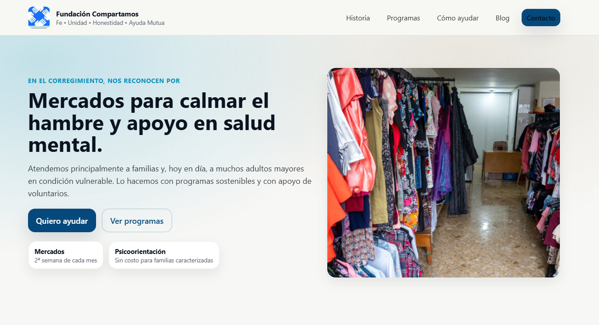
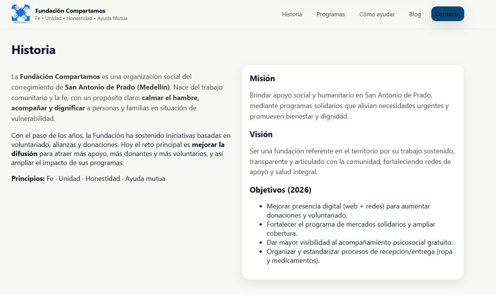
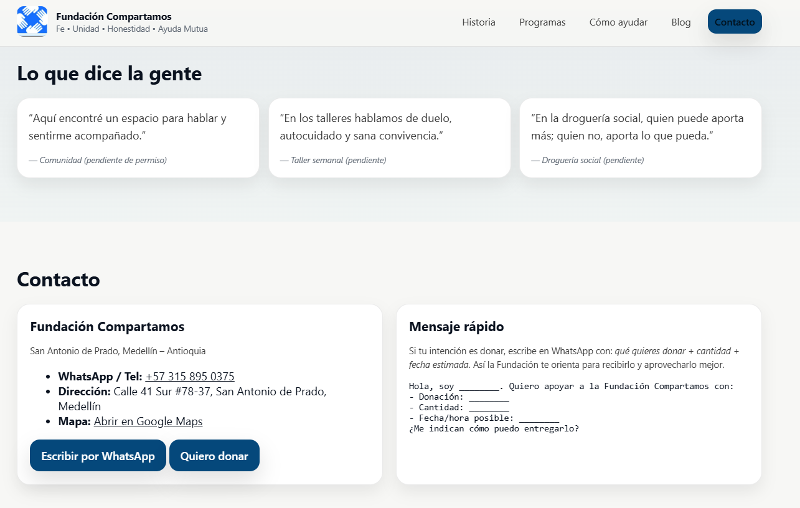

Acciones semanales, evidencias, reflexiones y próximos pasos.
Entradas
Semana 1
Diagnóstico de difusión e inicio de maquetación web
Esta semana inicié el acompañamiento a la Fundación con el objetivo de fortalecer su difusión digital.
El mayor problema no es la falta de trabajo social, sino la baja visibilidad, lo que afecta donaciones,
voluntariado y alianzas.
Acción 1 – Revisión de redes sociales y presencia web
Qué hice: revisé redes y presencia en internet.
Hallazgos: baja constancia en publicaciones y dificultad para administrar la web.
Mi opinión: se necesita un canal oficial claro que facilite contacto y donación.
Evidencias: (links y capturas en galeria e evidencias)
Acción 2 – Inicio de maquetación del sitio web
Qué hice: empecé la estructura tipo revista (historia, programas, cómo ayudar, contacto).
Resultado: primera versión de estructura lista para completar con fotos.
Dificultades: faltan fotos y datos finales para donación.
Evidencias: (links y capturas en galeria e evidencias)
Impacto esperado
Con web + rutina de publicaciones se mejora visibilidad, confianza y se facilitan donaciones y voluntariado.
Próximos pasos
Validar textos de historia y programas con la administradora.
Definir método de donación (cuenta / Nequi / Daviplata) y reglas de recepción.
Subir fotos iniciales y publicar la Semana 2.
Semana 3–4
De la invisibilidad a la acción: difusión digital con propósito
Esta semana avancé en dos acciones clave para apoyar a la Fundación Compartamos (San Antonio de Prado):
primero, un diagnóstico realista de su difusión digital; y segundo, el inicio del prototipo web como
“punto central” donde cualquier persona pueda entender qué hace la fundación y cómo apoyar.
Actividad 1 (Semana 3) – Diagnóstico de difusión digital
Revisé redes sociales, claridad del mensaje, constancia de publicaciones, canales de contacto y qué tan fácil
es que un donante o voluntario pase de “ver” a “ayudar”. El hallazgo principal es que sí hay trabajo social
valioso (mercados, apoyo psicosocial, farmacia solidaria, ropero), pero no está organizado en un lugar central
con información actualizada y pasos claros para apoyar.
Reflexión ODS: aporta al ODS 17 (Alianzas) porque mejora canales para sumar donantes,
voluntarios y aliados; y al ODS 10 (Reducción de desigualdades) al aumentar el acceso a información
y apoyo comunitario.
Actividad 2 (Semana 4) – Inicio de maquetación del sitio web
Avancé con la estructura del sitio web: inicio, historia, programas, “Cómo ayudar” y contacto. El objetivo es
reducir fricción: que en menos de un minuto una persona entienda qué hace la fundación, cómo donar y cómo contactar.
Dejé espacios listos para fotos y testimonios, porque esto aumenta credibilidad y alcance.
Reflexión ODS: aporta al ODS 1 y ODS 2 al facilitar donaciones para mercados;
y al ODS 3 al visibilizar el acompañamiento psicosocial.
Semana 5
Semana 5 – Consolidación del sitio: contenido, estructura y coherencia visual
Esta semana el foco fue convertir el prototipo en una página realmente útil para la comunidad:
organizar mejor la información, priorizar los programas por los que la Fundación es reconocida
y dejar rutas claras de contacto y donación.
Acción 1 – Ajustes de contenido y enfoque
Qué hice: reescribí secciones para que la historia, misión, visión y objetivos queden claros en lenguaje sencillo.
Resultado: la web explica “qué hace” la Fundación en menos de 1 minuto y orienta al visitante hacia programas y donaciones.
Reflexión ODS: esta acción aporta al ODS 10 (reducción de desigualdades)
porque mejora acceso a información para apoyar/solicitar ayuda, y al ODS 17 (alianzas)
al facilitar que más personas y organizaciones conecten con la Fundación.
Acción 2 – Organización visual de imágenes y tarjetas (evitar espacios vacíos / coherencia)
Qué hice: ordené y clasifiqué imágenes horizontales primero, verticales después para evitar “cuadros blancos” y recortes raros.
Resultado: los programas se ven consistentes y se leen mejor, aumentando credibilidad.
Reflexión ODS: aporta al ODS 1 y ODS 2 al facilitar donaciones
para mercados; y apoya ODS 3 al dar visibilidad al acompañamiento psicosocial.
Próximos pasos
Confirmar datos finales.
Dejar enlaces definitivos: WhatsApp, Facebook, Instagram y mapa.
Publicar versión “final” y preparar medición de métricas (Semana 7 y 8).
Semana 6
Semana 6 – Finalización funcional del sitio y evaluación de mi rol como agente social
Esta semana se cerró la versión funcional de la web: ya orienta a la comunidad, muestra programas principales,
y facilita el contacto por WhatsApp. El foco estuvo en dejar un producto replicable y fácil de usar,
y reflexionar sobre mi desempeño como agente de transformación social.
Solución 1 – Web como “vitrina oficial” para aumentar difusión
La web resuelve el problema de baja difusión: concentra historia, programas, formas de apoyo y contacto,
de manera sencilla. Esto aumenta la confianza y reduce fricción para donar o ser voluntario.
Solución 2 – Ruta clara de contacto (WhatsApp) y “mensaje rápido”
Incluir un botón directo a WhatsApp y un “mensaje rápido” ayuda a convertir visitas en acciones reales:
personas que antes solo miraban, ahora tienen un camino directo para apoyar.
Reflexión ODS: estas soluciones aportan al ODS 17 (alianzas y cooperación),
al ODS 1/2 (apoyo alimentario), y al ODS 3 (bienestar y salud mental).
Autoevaluación – Mi desempeño como agente social de transformación
Fortalezas: organización del contenido, capacidad de convertir entrevistas en soluciones prácticas, y constancia de mejora.
Aspectos por mejorar: gestión de tiempos, validación más rápida con la administradora y definición temprana de métricas.
Posición personal sobre el Proyecto Social de Formación (PSF)
El PSF me permitió aplicar habilidades técnicas (web) con sentido social: no es solo “hacer una página”,
es generar una herramienta que fortalece redes de apoyo, visibiliza programas y facilita la solidaridad.
Profesionalmente, esto me entrena en levantamiento de requerimientos reales, comunicación con un interlocutor
y construcción de soluciones sostenibles.
Espacio administrativo: organización y atención.Ropero solidario: donaciones que se transforman en apoyo.Farmacia solidaria: organización y entrega de medicamentos.Trabajo comunitario: acciones con sentido.

Página web: portada principal.

Página web: sección Historia.

Página web: sección Contacto.
Semana 7–8
Próximos pasos (Semana 7 y 8)
Implementar medición de métricas (visitas y fuentes de tráfico).
Publicar reporte final con capturas de métricas y reflexión de impacto.
Galería
Imágenes de la Fundación.
Farmacia solidaria: organización y entrega de medicamentos mediante donación solidaria.
Ropero solidario – organización y prendas.
Trabajo textil y producción comunitaria.
Productos y artesanías (apoyo a sostenibilidad).
Sobre el proyecto
Este blog documenta el proceso de investigación y apoyo digital a la Fundación Compartamos.
Aquí registro acciones semanales, hallazgos, opiniones, evidencias y mejoras implementadas.